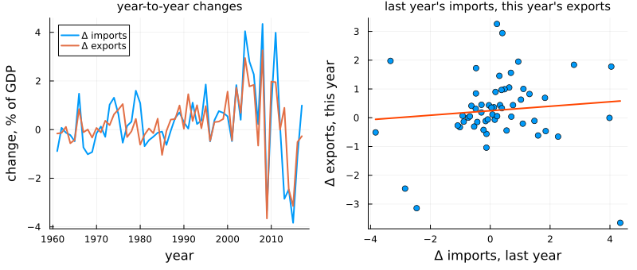
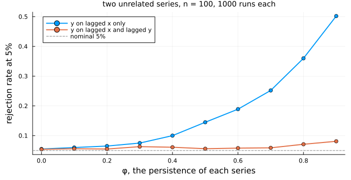
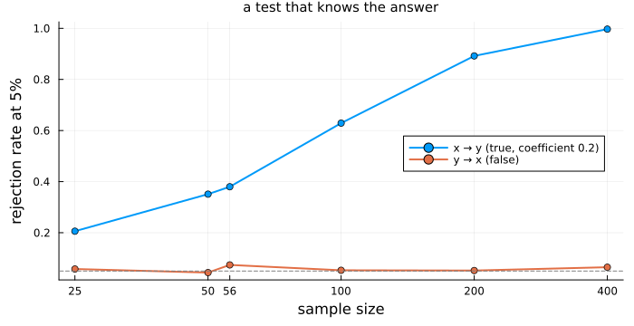
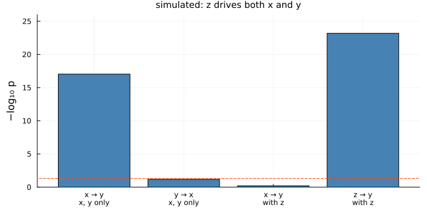
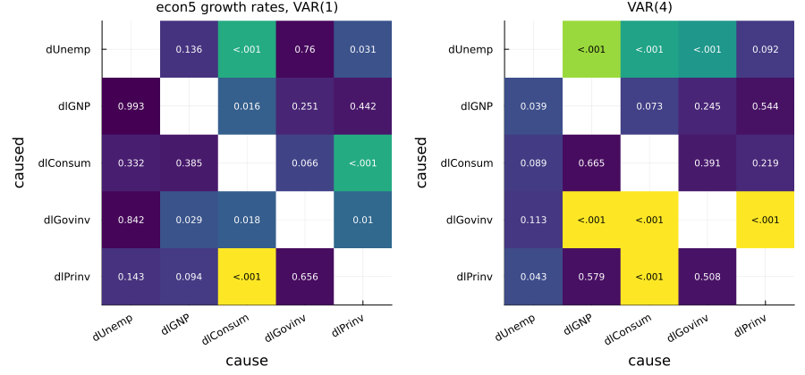
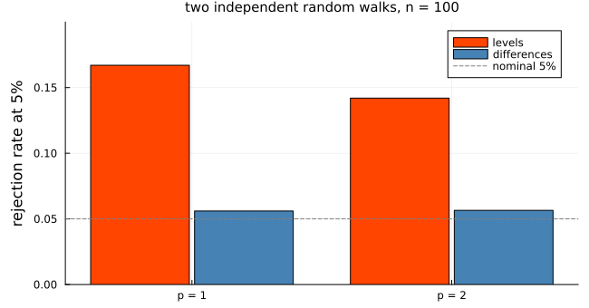
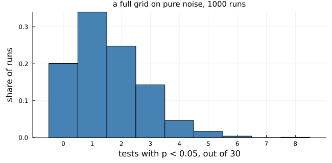

Does One Series Help Predict Another?
using TSAnalytics, Plots, Statistics, Random
g = dataset("global_economy")
ix = findall(==("India"), g.Country)
yr = Int.(g.Year[ix])
imports = Float64.(g.Imports[ix])
exports = Float64.(g.Exports[ix])
dY = (dImports = diff(imports), dExports = diff(exports))
x_prev, y_now = dY.dImports[1:end-1], dY.dExports[2:end]
b = cov(x_prev, y_now) / var(x_prev)
q1 = plot(yr[2:end], [dY.dImports dY.dExports]; label=["Δ imports" "Δ exports"], lw=2,
legend=:topleft, xlabel="year", ylabel="change, % of GDP", title="year-to-year changes",
titlefontsize=10)
q2 = scatter(x_prev, y_now; legend=false, ms=4, xlabel="Δ imports, last year",
ylabel="Δ exports, this year", title="last year's imports, this year's exports",
titlefontsize=10)
plot!(q2, x -> mean(y_now) + b * (x - mean(x_prev)), extrema(x_prev)...; color=:orangered, lw=2)
plot(q1, q2; layout=(1, 2), size=(800, 340), left_margin=4Plots.mm, bottom_margin=5Plots.mm)
m_in = fit_var(dY, 1)
println("A₁ (rows: equations; columns: last year's dImports, dExports)")
show(stdout, "text/plain", round.(m_in.A[1], digits=3)); println()
println("slope of the line in the right panel: ", round(b, digits=3))A₁ (rows: equations; columns: last year's dImports, dExports)
2×2 Matrix{Float64}:
0.249 -0.054
0.29 -0.335
slope of the line in the right panel: 0.078Chapter 45 ended its India example with a number and a promise. In a VAR(1) fitted to the year-to-year changes in India's import and export shares of GDP, the exports equation put a coefficient of 0.29 on last year's change in imports. A year in which imports grew as a share of GDP tended to be followed by one in which exports did — imported inputs turning into exported goods, perhaps, a story any trade economist at the Reserve Bank of India would recognise. The right-hand panel is the same relationship in its rawest form: each point is one year's export change plotted against the previous year's import change. Its line is flatter, 0.078, because the VAR's 0.29 is measured holding exports' own last change fixed, and that change enters with −0.335: a year of rising exports tends to be followed by a partial reversal.
The question is whether the slope is real. On 56 annual changes, with the turbulence after 2003 that Chapter 45 measured, a coefficient of 0.29 could be a finding or an accident. This chapter gives the test that decides, and then spends as much time on what the test does not decide, because its name promises more than it delivers.
The obvious attempt
Regress this year's export change on last year's import change — the line in the right panel — and read the t-statistic.
function slope_t(y, x) # y[t] on x[t-1], with an intercept
Y, X = y[2:end], [ones(length(y) - 1) x[1:end-1]]
β = X \ Y; r = Y - X * β
s2 = sum(abs2, r) / (length(Y) - 2)
β[2] / sqrt(s2 * inv(X'X)[2, 2])
end
println("t on last year's dImports: ", round(slope_t(dY.dExports, dY.dImports), digits=3))t on last year's dImports: 0.735A t of 0.735 says nothing is there. Before believing it, ask how this regression behaves when the answer is known to be no: simulate two unrelated AR(1) series with the same coefficient φ and count how often |t| clears 1.96, which should be 5% of the time. Alongside, run the regression that also includes y's own last value.
ar1(rng, n, φ) = (z = zeros(n + 100); for t in 2:n+100; z[t] = φ * z[t-1] + randn(rng); end; z[101:end])
function false_alarms(φ; reps=1000, n=100, rng=MersenneTwister(45))
naive = granger = 0
for _ in 1:reps
x, y = ar1(rng, n, φ), ar1(rng, n, φ)
naive += abs(slope_t(y, x)) > 1.96
granger += pvalue(granger_test(y, x; lags=1)) < 0.05
end
(naive / reps, granger / reps)
end
φs = 0.0:0.1:0.9
fa = false_alarms.(φs)
println("φ = 0.9: naive ", first(fa[end]), " with y's own lag ", last(fa[end]))φ = 0.9: naive 0.502 with y's own lag 0.081plot(φs, [first.(fa) last.(fa)]; marker=:circle, lw=2, label=["y on lagged x only" "y on lagged x and lagged y"],
xlabel="φ, the persistence of each series", ylabel="rejection rate at 5%", legend=:topleft,
title="two unrelated series, n = 100, 1000 runs each", titlefontsize=10, size=(700, 360),
left_margin=4Plots.mm, bottom_margin=4Plots.mm)
hline!([0.05]; color=:gray, ls=:dash, label="nominal 5%")
With no persistence the naive regression is fine. As φ rises it finds a "lead" that is not there, in about half the runs at φ = 0.9. y's own memory has nowhere to go except into the residual, the residuals are autocorrelated, and the usual standard error is far too small. Put y's own lag in the regression and the rate returns to near 5% (still 0.081 at φ = 0.9, a first hint of trouble near a unit root). On India the naive regression erred the other way, hiding a coefficient rather than inventing one. Either way, a test that leaves out y's own past answers the wrong question.
The idea
Clive Granger's 1969 definition makes the fix into the concept. A series x Granger-causes y if past values of x improve the forecast of y beyond what y's own past already provides. It is a statement about predictive content, and nothing more.
The test compares two regressions for y: the restricted one on its own lags only, and the unrestricted one that adds p lags of x. If x adds nothing, the unrestricted fit should be better only by chance:
\[F = \frac{(\mathrm{RSS}_r - \mathrm{RSS}_u)/p}{\mathrm{RSS}_u/(T - 2p - 1)} .\]
For India at one lag, by hand:
ols_rss(Y, X) = (r = Y - X * (X \ Y); sum(abs2, r))
Y = dY.dExports[2:end]
Xr = [ones(length(Y)) dY.dExports[1:end-1]]
Xu = [Xr dY.dImports[1:end-1]]
F = (ols_rss(Y, Xr) - ols_rss(Y, Xu)) / (ols_rss(Y, Xu) / (length(Y) - 3))
println("F by hand: ", round(F, digits=4))F by hand: 2.6355In a VAR the same restriction is a set of zeros: x does not Granger-cause y when A_j[y, x] is zero at every lag j. With more series it generalises to a block of causes and a block of caused series, and a larger block of zeros.
Making it work
granger_test has two methods, and the one you get depends on what you pass it. Give it a fitted VAR and it runs the system test:
granger_test(m_in; cause=:dImports, caused=:dExports)Granger causality test -- system (VAR Wald/F)
H0: dImports do not Granger-cause dExports
F = 2.635524 df = (1, 106) p = 0.1074678528
chi2 = 2.635524 p = 0.104497557 lags = 1 T = 56rev = granger_test(m_in; cause=:dExports, caused=:dImports)
pair = granger_test(dY.dExports, dY.dImports; lags=1)
sys = granger_test(m_in; cause=:dImports, caused=:dExports)
println("reverse direction: F = ", round(statistic(rev), digits=4), " p = ", round(pvalue(rev), digits=4))
println("pairwise: F = ", round(statistic(pair), digits=4), " df = (", pair.df1, ", ", pair.df2, ") p = ", round(pvalue(pair), digits=4))
println("√F, the t-statistic on 0.29: ", round(sqrt(statistic(sys)), digits=3))reverse direction: F = 0.0339 p = 0.8543
pairwise: F = 2.6355 df = (1, 53) p = 0.1104
√F, the t-statistic on 0.29: 1.623That answers Chapter 45. The 0.29 has a t-statistic of 1.623 and a p-value of 0.107: suggestive, not distinguishable from zero at any conventional level. The reverse direction, exports helping to predict imports, has a p-value of 0.854 and no case at all.
Give granger_test two vectors, granger_test(y, x; lags), and it runs the pairwise single-equation test built by hand above. The F statistic is identical, 2.6355, because with two series the restriction falls on one equation. The p-values are not, 0.1075 against 0.1104: the system test's denominator degrees of freedom count residuals across all K equations, 106, the pairwise test's one equation's, 53. The gap never closes, and with a block of caused series the statistics also part company. Use the system test when the VAR is your model.
Is 0.107 evidence that imports do not help? Ask how often the test would detect a real effect. Simulate one, so that the truth is known: x an AR(1), and y depending on its own past and on last period's x with coefficient 0.2.
function power(n, b; reps=1000, rng=MersenneTwister(n))
hits = misses = 0
for _ in 1:reps
x, y = zeros(n + 50), zeros(n + 50)
for t in 2:n+50
x[t] = 0.5x[t-1] + randn(rng)
y[t] = 0.5y[t-1] + b * x[t-1] + randn(rng)
end
m = fit_var((x = x[51:end], y = y[51:end]), 1)
hits += pvalue(granger_test(m; cause=:x)) < 0.05
misses += pvalue(granger_test(m; cause=:y)) < 0.05
end
(hits / reps, misses / reps)
end
ns = [25, 50, 56, 100, 200, 400]
pw = power.(ns, 0.2)
println("n = 56: x → y detected ", first(pw[3]), " y → x (false) ", last(pw[3]))n = 56: x → y detected 0.38 y → x (false) 0.074plot(ns, [first.(pw) last.(pw)]; marker=:circle, lw=2, xscale=:log10, xticks=(ns, string.(ns)),
label=["x → y (true, coefficient 0.2)" "y → x (false)"], legend=:right,
xlabel="sample size", ylabel="rejection rate at 5%", title="a test that knows the answer",
titlefontsize=10, size=(700, 360), left_margin=4Plots.mm, bottom_margin=4Plots.mm)
hline!([0.05]; color=:gray, ls=:dash, label="")
At India's sample size a genuine coefficient of 0.2 is detected in 0.38 of runs, while the false direction is rejected in 0.074, near the nominal 5%. The test is honest about direction and short of power on fifty-six points. A p-value of 0.107 means "not shown", which is a different thing from "shown not to be".
The within-year link that Chapter 45 found in Σ is a separate question with its own test, instantaneous_causality:
ic = instantaneous_causality(m_in; cause=:dImports)
ic2 = instantaneous_causality(m_in; cause=:dExports)
S = m_in.sigma_df
println("residual correlation: ", round(S[1, 2] / sqrt(S[1, 1] * S[2, 2]), digits=3))
println("cause = dImports: χ² = ", round(statistic(ic), digits=4), " p = ", round(pvalue(ic), sigdigits=3))
println("cause = dExports: χ² = ", round(statistic(ic2), digits=4))residual correlation: 0.816
cause = dImports: χ² = 22.3676 p = 2.25e-6
cause = dExports: χ² = 22.3676The residual correlation of 0.816 is overwhelming evidence that the two shares move together within the year. Swapping cause and caused returns the identical statistic, because a correlation has no direction. Despite the name, it says nothing about which series moved first.
Blocks work the same way. econ5, the five quarterly US series from Chapter 45, in growth rates (and the change in unemployment, which is already a rate):
e = dataset("econ5")
dl(v) = diff(log.(Float64.(v)))
E = (dUnemp = diff(Float64.(e.unemp)), dlGNP = dl(e.gnp), dlConsum = dl(e.consum),
dlGovinv = dl(e.govinv), dlPrinv = dl(e.prinv))
println(var_select(E; lag_max=8).selected)(aic = 4, bic = 1, hqic = 4, fpe = 4)m1 = fit_var(E, 1)
granger_test(m1; cause=[:dlGovinv, :dlPrinv], caused=[:dUnemp, :dlGNP, :dlConsum])Granger causality test -- system (VAR Wald/F)
H0: dlGovinv dlPrinv do not Granger-cause dUnemp dlGNP dlConsum
F = 3.874006 df = (6, 765) p = 0.0008108163
chi2 = 23.244037 p = 0.0007187315 lags = 1 T = 159Government and private investment together help predict the other three at one lag: one test with df1 = 6, a coefficient for each cause, caused equation and lag, where six pairwise tests would spend six chances on one hypothesis.
The complication
Everything above is conditional — on the series in the system, the number of lags and stationarity — and each can change the answer.
A third series. Simulate a hidden driver z, a persistent AR(1), and let x follow it with a lag of one period and y with a lag of two. Neither x nor y affects the other; both merely echo z.
function hidden(rng, n)
z = zeros(n + 52); for t in 2:n+52; z[t] = 0.8z[t-1] + randn(rng); end
x = [z[t-1] + randn(rng) for t in 3:n+52]
y = [z[t-2] + randn(rng) for t in 3:n+52]
(x = x[51:end], y = y[51:end], z = z[53:end])
end
h = hidden(MersenneTwister(47), 200)
mb = fit_var((x = h.x, y = h.y), 2)
mt = fit_var((x = h.x, y = h.y, z = h.z), 2)
tests = ["x → y\nx, y only" => granger_test(mb; cause=:x, caused=:y),
"y → x\nx, y only" => granger_test(mb; cause=:y, caused=:x),
"x → y\nwith z" => granger_test(mt; cause=:x, caused=:y),
"z → y\nwith z" => granger_test(mt; cause=:z, caused=:y)]
sci(p) = (k = floor(Int, log10(p)); string(round(p / 10.0^k, digits=2), "e", k))
fmt(p) = p < 1e-4 ? string("= ", sci(p), " (−log₁₀ p = ", round(-log10(p), digits=1), ")") : string("= ", round(p, digits=3))
foreach(((k, t),) -> println(rpad(replace(k, "\n" => ", "), 18), " p ", fmt(pvalue(t))), tests)
rate(f; reps=500, rng=MersenneTwister(1)) = mean(f(hidden(rng, 200)) < 0.05 for _ in 1:reps)
println("x → y rejected in 500 runs, x and y only: ", rate(d -> pvalue(granger_test(fit_var((x = d.x, y = d.y), 2); cause=:x))),
" with z: ", rate(d -> pvalue(granger_test(fit_var((x = d.x, y = d.y, z = d.z), 2); cause=:x, caused=:y))))x → y, x, y only p = 9.14e-18 (−log₁₀ p = 17.0)
y → x, x, y only p = 0.067
x → y, with z p = 0.637
z → y, with z p = 6.55e-24 (−log₁₀ p = 23.2)
x → y rejected in 500 runs, x and y only: 1.0 with z: 0.06bar(first.(tests), [-log10(pvalue(t)) for t in last.(tests)]; legend=false, ylabel="−log₁₀ p", ylims=(0, 26),
title="simulated: z drives both x and y", titlefontsize=10, color=:steelblue,
size=(700, 360), left_margin=4Plots.mm, bottom_margin=6Plots.mm)
hline!([-log10(0.05)]; color=:orangered, ls=:dash)
In the two-series VAR, x Granger-causes y beyond any doubt, and in every one of 500 replications (1.0); with z in the VAR the rate falls to 0.06. That is not a mistake: x really does help predict y, because it carries news of z a period early. Add z and the effect vanishes while z takes over. Granger causality is defined relative to an information set, and when the information set changes, so may the answer. For India the obvious omitted candidates — world demand, the exchange rate, oil prices — are exactly the kind of common driver that would produce a 0.29 without any link from imports to exports.
The lag order. Chapter 45 showed that the criteria disagree on econ5; here is what that disagreement does to the causality conclusions. Every directed pair, at SC's one lag and at the four lags AIC and HQ choose:
function grid(m)
nm = m.names; K = length(nm)
[a == b ? NaN : pvalue(granger_test(m; cause=nm[a], caused=nm[b])) for b in 1:K, a in 1:K]
end
function pmap(P, nm, ttl)
lab = string.(nm)
hm = heatmap(lab, lab, min.(-log10.(P), 6); c=:viridis, clims=(0, 6), yflip=true, title=ttl,
xlabel="cause", ylabel="caused", titlefontsize=10, xrotation=30, colorbar=false)
annotate!(hm, [(a - 0.5, b - 0.5, text(P[b, a] < 0.001 ? "<.001" : string(round(P[b, a], digits=3)),
7, -log10(P[b, a]) > 4 ? :black : :white)) for a in axes(P, 2) for b in axes(P, 1) if a != b])
end
P1, P4 = grid(m1), grid(fit_var(E, 4))
println("p < 0.05 at one lag: ", count(<(0.05), filter(!isnan, P1)), " of 20; at four lags: ",
count(<(0.05), filter(!isnan, P4)), "; in both: ", count(((a, b),) -> a < 0.05 && b < 0.05, zip(P1, P4)))
println("dlGNP → dUnemp: one lag p = ", round(P1[1, 2], digits=3), ", four lags p = ", round(P4[1, 2], digits=5))
println("dlGovinv → dUnemp: one lag p = ", round(P1[1, 4], digits=3), ", four lags p = ", round(P4[1, 4], digits=5))p < 0.05 at one lag: 8 of 20; at four lags: 9; in both: 5
dlGNP → dUnemp: one lag p = 0.136, four lags p = 1.0e-5
dlGovinv → dUnemp: one lag p = 0.76, four lags p = 0.00067plot(pmap(P1, m1.names, "econ5 growth rates, VAR(1)"), pmap(P4, m1.names, "VAR(4)");
layout=(1, 2), size=(900, 420), bottom_margin=8Plots.mm, left_margin=6Plots.mm)
Read by column: GNP growth helps predict the change in unemployment at four lags with p < 0.001, and at one lag not at the 5% level; government investment's growth helps predict unemployment at four lags and nothing at one. Eight arrows at one lag, nine at four, and only five of them in both: the map depends on a choice the criteria could not agree on. India's one arrow behaves the same way:
lagp = [(pvalue(granger_test(fit_var(dY, p); cause=:dImports, caused=:dExports)),
pvalue(granger_test(fit_var(dY, p); cause=:dExports, caused=:dImports))) for p in 1:4]
println("dImports → dExports, p = 1…4: ", round.(first.(lagp), digits=3))
println("dExports → dImports, p = 1…4: ", round.(last.(lagp), digits=3))dImports → dExports, p = 1…4: [0.107, 0.146, 0.315, 0.491]
dExports → dImports, p = 1…4: [0.854, 0.93, 0.959, 0.408]The p-value rises from 0.107 to 0.491 as lags are added, each extra lag spending degrees of freedom the 56 points cannot spare. Decide the lag order before running the test, by a criterion you would defend for its own sake, and report how the answer moves.
Levels. Chapter 45 fitted India in changes because the levels trend. Fit the levels anyway, and the test finds an arrow the changes did not.
Whether to believe it depends on how the test behaves on trending data, so alongside, simulate two independent random walks and test them in levels and in differences:
ml = fit_var((imports = imports, exports = exports), 1)
println("India in levels, exports → imports: p = ", round(pvalue(granger_test(ml; cause=:exports)), digits=3))
function rw_rate(p, levels; reps=2000, rng=MersenneTwister(10p + levels))
mean(1:reps) do _
x, y = cumsum(randn(rng, 100)), cumsum(randn(rng, 100))
d = levels ? (x = x, y = y) : (x = diff(x), y = diff(y))
pvalue(granger_test(fit_var(d, p); cause=:x)) < 0.05
end
end
rw = [rw_rate(p, lv) for lv in (true, false), p in 1:2]
println("levels: ", rw[1, :], " differences: ", rw[2, :])India in levels, exports → imports: p = 0.042
levels: [0.167, 0.142] differences: [0.056, 0.0565]bar([0.8, 1.8], rw[1, :]; bar_width=0.38, label="levels", color=:orangered, ylims=(0, 0.2),
xticks=([1, 2], ["p = 1", "p = 2"]), ylabel="rejection rate at 5%",
title="two independent random walks, n = 100", titlefontsize=10, size=(650, 340), left_margin=4Plots.mm)
bar!([1.2, 2.2], rw[2, :]; bar_width=0.38, label="differences", color=:steelblue)
hline!([0.05]; color=:gray, ls=:dash, label="nominal 5%")
In levels the test rejects a true null in 0.167 of runs at one lag and 0.142 at two, about three times the nominal rate; in differences it stays near 5%. With unit roots the Wald statistic need not follow its F or χ² distribution at all (Sims, Stock and Watson 1990), and the levels result for India is not evidence of anything. Differencing is not the whole answer either — if the series are tied together in levels, it throws the tie away — and Chapter 49 is about that case.
Testing every pair. The grids above are forty tests. If nothing caused anything, how many small p-values would chance supply?
cnt = let rng = MersenneTwister(30)
[count(<(0.05), filter(!isnan, grid(fit_var(randn(rng, 100, 6), 1)))) for _ in 1:1000]
end
println("six unrelated white-noise series, 30 tests each: at least one p < 0.05 in ",
mean(cnt .>= 1), " of runs; mean ", mean(cnt), " (1 − 0.95³⁰ = ", round(1 - 0.95^30, digits=3), ")")six unrelated white-noise series, 30 tests each: at least one p < 0.05 in 0.799 of runs; mean 1.566 (1 − 0.95³⁰ = 0.785)histogram(cnt; bins=-0.5:1:maximum(cnt)+0.5, normalize=:probability, legend=false, color=:steelblue,
xlabel="tests with p < 0.05, out of 30", ylabel="share of runs", xticks=0:maximum(cnt),
title="a full grid on pure noise, 1000 runs", titlefontsize=10, size=(650, 320),
left_margin=4Plots.mm, bottom_margin=4Plots.mm)
Roughly four times in five, a grid of thirty tests on pure noise contains at least one "significant" arrow. A grid is a map of where to look, not a list of findings; a single p = 0.03 in it means little unless it was the question you set out to ask. A Bonferroni threshold, 0.05/30, is the bluntest correction, and the block test above is often the better one: ask the question you actually have, once.
Both R and Python ship two Granger tests under similar names, and they do not return the same p-value. On India's changes at one lag (run here with vars 1.6.1, lmtest 0.9.40, and statsmodels 0.14.1 and 0.15.0): vars::causality and statsmodels' test_causality(kind="f") report F = 2.6355 on (1, 106) with p = 0.1075; lmtest::grangertest and statsmodels' grangercausalitytests (ssr_ftest) report the same F on 53 degrees of freedom with p = 0.1104. All four match this package's corresponding method. Neither pair is wrong; they are the system and the pairwise test, and a reader comparing a paper's p-value with their own needs to know which was run.
The second difference is a defect. On the hidden-driver simulation, vars::causality prints p-value < 2.2e-16 and stores a p-value of exactly zero, because it computes 1 - pf(...) rather than the upper tail. statsmodels (both versions) returns 9.14e-18, which is this package's value. And statsmodels' test_inst_causality raises an IndexError whenever both blocks have more than one member; the details are in Causality and Impulse Responses.
The two tests are two methods of one function, chosen by dispatch: a VARModel gets the system test, two vectors the pairwise one, and the result's kind field records which. Both carry the asymptotic χ² version in wald and wald_pvalue; cause and caused accept a name, a column index, or a vector of either.
Where this leaves you
You can test whether one series, or a block of them, helps predict another beyond what its own past provides; choose between the system and pairwise tests knowingly; read the within-period link as symmetric; and judge a p-value by the power the sample could have had. The 0.29 from Chapter 45 is suggestive and not established: p = 0.107 at one lag, weaker at more.
You also know what the word "causality" is not doing. A Granger arrow can be produced by a common driver, can disappear when a third series enters the system, can move with the lag order, is unreliable in the levels of trending series, and will appear by chance somewhere in any large grid. What it can never do is say how much one series moves when another is disturbed, or for how long. That is a question about the whole path of responses, and it runs straight into the contemporaneous correlation this chapter could only test: Chapter 48 traces a shock through a VAR, and has to decide which series moves first to do it.
See also
- Chapter 45 — the India VAR and the
0.29this chapter tests - Chapter 46 — choosing and checking the VAR the system test is run on
- Chapter 49 — non-stationary series that are tied together
- Chapter 23 — out-of-sample evaluation, the forecasting question Granger's definition rests on
- Causality and Impulse Responses — the manual chapter, with both reference defects
- API:
granger_test,instantaneous_causality,fit_var,var_select,pvalue,statistic